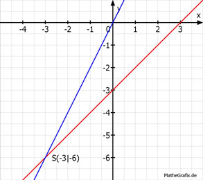

Lineare Gleichungssysteme Aufgabe 63 Bestimmen Sie den Schnittpunkt der Geraden. 2x - 2y = 6 (1) y = 2x (2) (1) nach y umgestellt 2x - 2y = 6 |+2y 2x = 2y + 6 |-6 2x - 6 = 2y| :2 y = x - 3 y = y x - 3 = 2x |-x x = -3 x in (2) eingesetzt y = 2 * (-3) = -6 